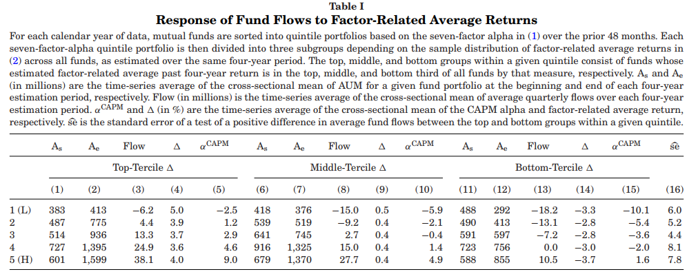
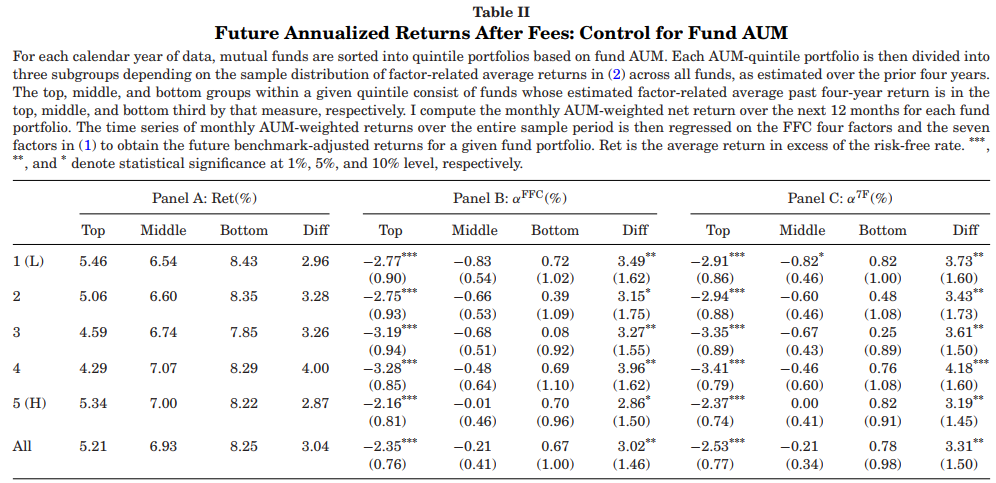
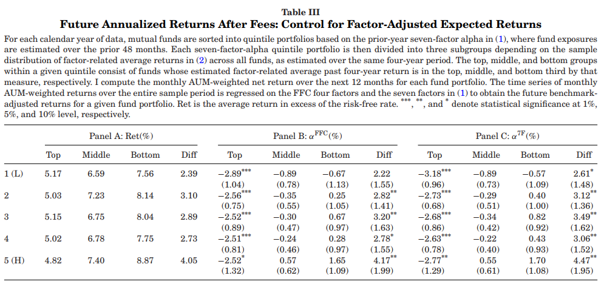

实证结果
1.因子相关收益与基金申赎资金流动
在每一年，按照过去48个月估计的7因子模型Alhpa将样本分为5组，在每一组内有根据因子相关收益将样本分成三组，共形成15个组合，分别统计每个组合形成期开始到结束的解决规模、申购赎回资金量、因子相关收益和Alpha。

结果如表1所示，在控制基金经理管理能力后，基金的申购赎回资金流量仍与因子相关收益有线性关系，随着因子相关收益下降，申购赎回资金也会减少。
2.因子相关收益与未来Alpha
在完全理性的世界中，主动基金投资者应该能把基金经理的管理能力和系统性因子的风险暴露区分开来，这样投资者应该给予有管理能力的基金更大规模，申购赎回的资金流应该与未来收益正相关。因此，本文通过控制基金规模和基金经理能力后讨论申购赎回资金流与未来收益的关系。
(1)控制基金规模

(2)控制基金经理能力

结果如表2和表3所示，直观地我们发现，基金未来收益与基金经理能力和基金规模没有关系，而是随着过去因子收益变化，过去因子高的基金反而未来获得更低的收益，这表明投资者并不能区分基金经理能力和系统因子。
3.正向因子相关收益的基金未来业绩不佳的原因

本文从基金投资者追求过去业绩导致的规模不经济的角度解释基金未来收益不佳的原因。将基金按照因子相关收益分为两组，在每一组内再按照交易成本分三组，我们发现基金收益驱动主要受交易成本驱动，未来收益随基金交易成本上升而下降。